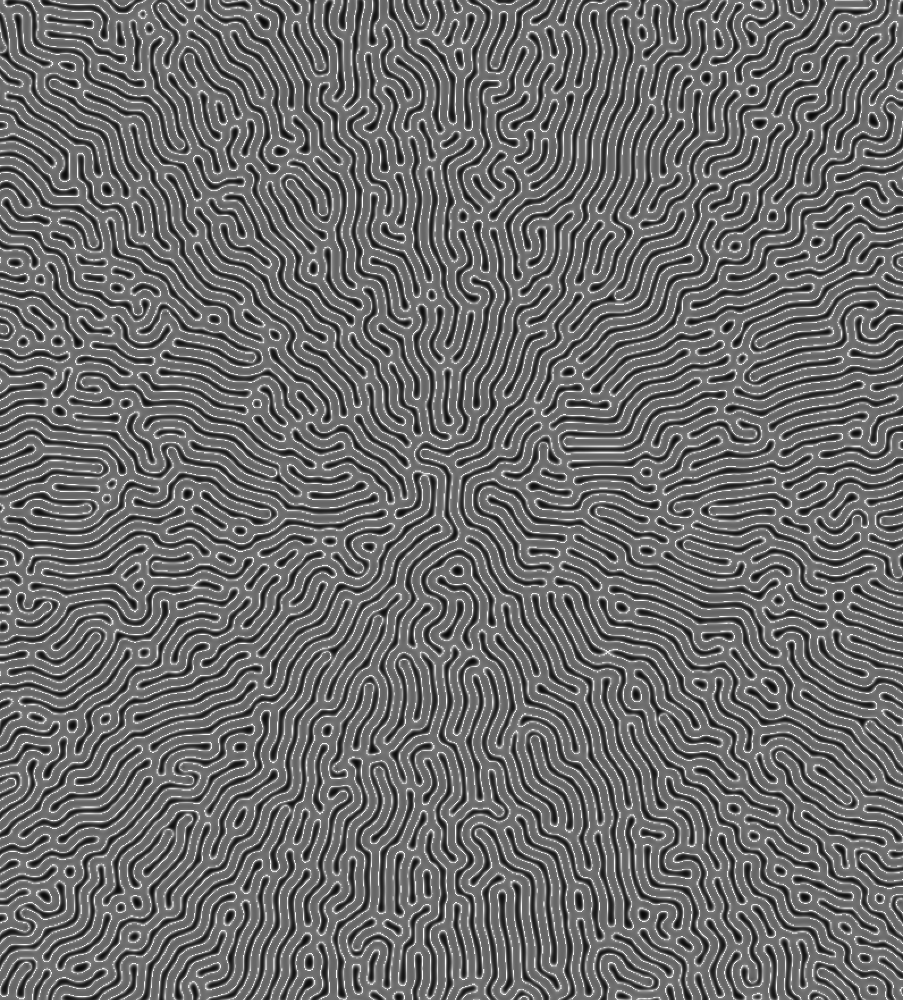
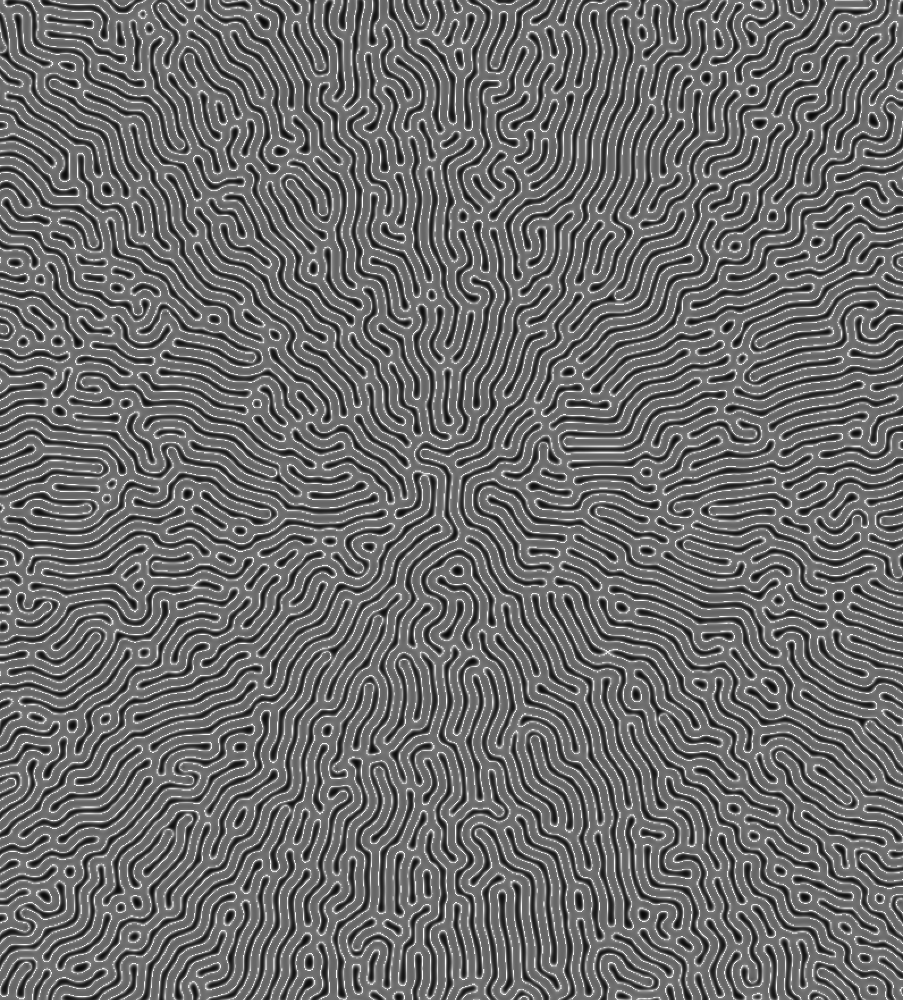

Alan Turing est connu
principalement pour être un mathématicien qui a posé les bases de ce
que l’on appelle aujourd’hui un ordinateur, grâce à la machine de
Turing qu’il a créé pour décrypter enigma. Mais il est également au
fondement de ce qui est aujourd’hui la Morphogenèse, sans lui ce
domaine n’existerais sans doute pas.
À partir de cela, je décide de créer une paire de lunettes en hommage à
Alan Turing en utilisant des principes morphogenèse (attracteur Étranges,
réaction-diffusion). Je trouvais intéressant le fait de développer un objet
qui lui rend hommage en mettant en lumière une pratique actuelle importante
qui n’existerais pas grâce à lui et qui n’est pas directement relier à son
nom contrairement au numérique.
Processus : Programation d'attracteur etrange(2d, 3D) > interpretation 3D >
Dessin de forme > Assemblage de formes > Modélisation > Aplication de la
reaction-diffusion comme texture.
--> Modélisation 3D, 3D nodale, Programmation


 
